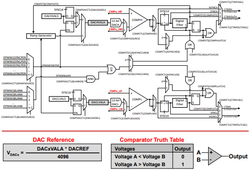
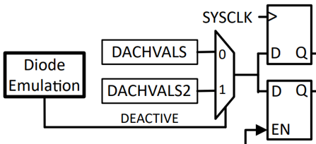
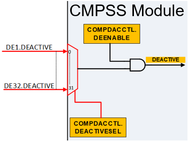
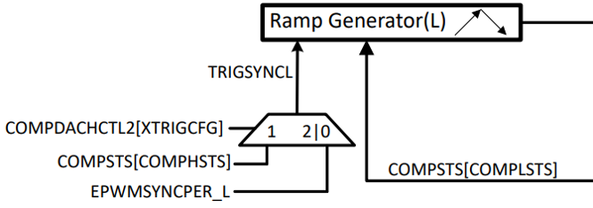
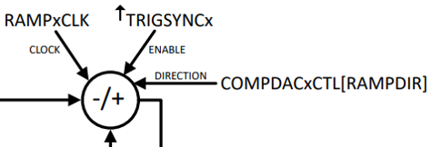
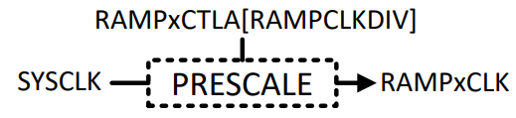
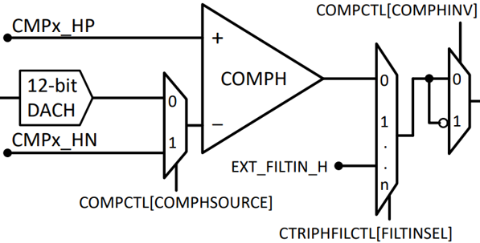

Comparator Subsystem (CMPSS)#
Introduction to CMPSS#
Comparator Subsystem (CMPSS) modules are useful for supporting applications such as peak current mode control, switched-mode power, power factor correction, and voltage trip monitoring.
Each CMPSS module has two comparators- a high comparator (COMPH) and a low comparator (COMPL).’High’ and ‘Low’ in this context just refers to the location within the CMPSS module.
Comparator Subsystem Overview#
Each CMPSS module is designed around a pair of analog comparators which generates a digital output indicating if the voltage on the positive input is greater than the voltage on the negative input.
The diagram below is for the F28004x device:

The positive input to the comparator is always driven from an external pin.
The negative input can be driven by either an external pin or an internal programmable 12-bit digital-to-analog (DAC) as a reference voltage.
\(V_{DAC} = \frac{DACxVALA * DACREF}{4096}\)
Comparator Truth Table#
Voltages |
Output |
|---|---|
Voltage A < Voltage B |
0 |
Voltage A > Voltage B |
1 |
Values written to the DAC can take effect immediately or be synchronized with ePWM events. A ramp generator is optionally available to the control the internal DAC reference value for one comparator in the module.
Each comparator output is feed through a programmable digital filter that can remove spurious trip signals.
The output of the CMPSS generates trip signals to the ePWM event trigger submodule and GPIO structure.
CMPSS Lite#
CMPSS and CMPSS_LITE share a common architecture, but some features are supported only by the full CMPSS variant (full module) and not the CMPSS_LITE variant (reduced functionality and performance). CMPSS_LITE does not have the capability to do DAC ramp generation and only select device/instances have a low DAC output on the external pin.
Note that the device data sheet indicates electrical characteristics for the two variants separately.
CMPSS - Type 6#
Note
Not all C2000 devices have a Type-6 CMPSS module. Refer to the Peripheral Reference Guide for a list of supported modules and module types on your device.
Diode Emulation Support#
Diode emulation mode is a mode of operation of power transistors to emulate the blocking function of a diode, which reduces losses in the diode. To emulate the blocking function of a diode, the current through the transistor is monitored and changes in current flow direction are detected by comparing the current with a constant threshold. Once in the diode emulation mode, it is expected that the comparator thresholds will be switched to a different setting.


New Ramp Generator Features#
The type 6 CMPSS is capable of having dual ramp generators for a CMPSS module, one for the high comparator and one for the low comparator.

These ramp generators can count up or down and apply a divide value RAMPCLKDIV to the counter.

The ramp clock can be determined from this value by calculating RAMPCLK = SYSCLK /(RAMPCLKDIV + 1).

External Filter Input Support#
The Digit Filter blocks can be used to filter external digital signals EXT_FILTIN_H/L when the CMPSS core is not in use. These are connected from X-BAR outputs. To configure the external digital signals, use COMPDACHCTL.FILTINSEL or COMPDACHCTL.FILTINSEL.
